<!DOCTYPE html
  PUBLIC "-//W3C//DTD HTML 4.01 Transitional//EN">

<html><html><body><div class="banner"><a href="../../../../index.html"></a></div></body></html><head>
<meta content="text/html; charset=utf-8" http-equiv="Content-Type"/>
<!--
This HTML was auto-generated from MATLAB code.
To make changes, update the MATLAB code and republish this document.
      --><title>2 dimensional Mathieu Equation</title><meta content="MATLAB 9.14" name="generator"/><link href="http://purl.org/dc/elements/1.1/" rel="schema.DC"/><meta content="2023-09-02" name="DC.date"/><meta content="Coupled_Mathieu_Equations.m" name="DC.source"/><style type="text/css">
html,body,div,span,applet,object,iframe,h1,h2,h3,h4,h5,h6,p,blockquote,pre,a,abbr,acronym,address,big,cite,code,del,dfn,em,font,img,ins,kbd,q,s,samp,small,strike,strong,tt,var,b,u,i,center,dl,dt,dd,ol,ul,li,fieldset,form,label,legend,table,caption,tbody,tfoot,thead,tr,th,td{margin:0;padding:0;border:0;outline:0;font-size:100%;vertical-align:baseline;background:transparent}body{line-height:1}ol,ul{list-style:none}blockquote,q{quotes:none}blockquote:before,blockquote:after,q:before,q:after{content:'';content:none}:focus{outine:0}ins{text-decoration:none}del{text-decoration:line-through}table{border-collapse:collapse;border-spacing:0}

html { min-height:100%; margin-bottom:1px; }
html body { height:100%; margin:0px; font-family:Arial, Helvetica, sans-serif; font-size:10px; color:#000; line-height:140%; background:#fff none; overflow-y:scroll; }
html body td { vertical-align:top; text-align:left; }

h1 { padding:0px; margin:0px 0px 25px; font-family:Arial, Helvetica, sans-serif; font-size:1.5em; color:#d55000; line-height:100%; font-weight:normal; }
h2 { padding:0px; margin:0px 0px 8px; font-family:Arial, Helvetica, sans-serif; font-size:1.2em; color:#000; font-weight:bold; line-height:140%; border-bottom:1px solid #d6d4d4; display:block; }
h3 { padding:0px; margin:0px 0px 5px; font-family:Arial, Helvetica, sans-serif; font-size:1.1em; color:#000; font-weight:bold; line-height:140%; }

a { color:#005fce; text-decoration:none; }
a:hover { color:#005fce; text-decoration:underline; }
a:visited { color:#004aa0; text-decoration:none; }

p { padding:0px; margin:0px 0px 20px; }
img { padding:0px; margin:0px 0px 20px; border:none; }
p img, pre img, tt img, li img, h1 img, h2 img { margin-bottom:0px; }

ul { padding:0px; margin:0px 0px 20px 23px; list-style:square; }
ul li { padding:0px; margin:0px 0px 7px 0px; }
ul li ul { padding:5px 0px 0px; margin:0px 0px 7px 23px; }
ul li ol li { list-style:decimal; }
ol { padding:0px; margin:0px 0px 20px 0px; list-style:decimal; }
ol li { padding:0px; margin:0px 0px 7px 23px; list-style-type:decimal; }
ol li ol { padding:5px 0px 0px; margin:0px 0px 7px 0px; }
ol li ol li { list-style-type:lower-alpha; }
ol li ul { padding-top:7px; }
ol li ul li { list-style:square; }

.content { font-size:1.2em; line-height:140%; padding: 20px; }

pre, code { font-size:12px; }
tt { font-size: 1.2em; }
pre { margin:0px 0px 20px; }
pre.codeinput { padding:10px; border:1px solid #d3d3d3; background:#f7f7f7; }
pre.codeoutput { padding:10px 11px; margin:0px 0px 20px; color:#4c4c4c; }
pre.error { color:red; }

@media print { pre.codeinput, pre.codeoutput { word-wrap:break-word; width:100%; } }

span.keyword { color:#0000FF }
span.comment { color:#228B22 }
span.string { color:#A020F0 }
span.untermstring { color:#B20000 }
span.syscmd { color:#B28C00 }
span.typesection { color:#A0522D }

.footer { width:auto; padding:10px 0px; margin:25px 0px 0px; border-top:1px dotted #878787; font-size:0.8em; line-height:140%; font-style:italic; color:#878787; text-align:left; float:none; }
.footer p { margin:0px; }
.footer a { color:#878787; }
.footer a:hover { color:#878787; text-decoration:underline; }
.footer a:visited { color:#878787; }

table th { padding:7px 5px; text-align:left; vertical-align:middle; border: 1px solid #d6d4d4; font-weight:bold; }
table td { padding:7px 5px; text-align:left; vertical-align:top; border:1px solid #d6d4d4; }


  </style></head><body><div class="content"><h1>2 dimensional Mathieu Equation</h1><!--introduction--><!--/introduction--><h2>Contents</h2><div><ul><li><a href="#2">Generate model</a></li><li><a href="#3">Dynamical system setup</a></li><li><a href="#4">Add forcing</a></li><li><a href="#5">Linear Modal Analysis</a></li><li><a href="#6">Forced response curves using SSMs</a></li><li><a href="#10">Get results from full system</a></li><li><a href="#11">Stability Diagram from Reduced Dynamics</a></li><li><a href="#12">Verification: Collocation using <a href="https://sourceforge.net/p/cocotools/wiki/Home/">coco</a></a></li></ul></div><p>We consider two oscillators that are coupled via a nonlinear spring with time varying linear stiffness coefficients.</p><p>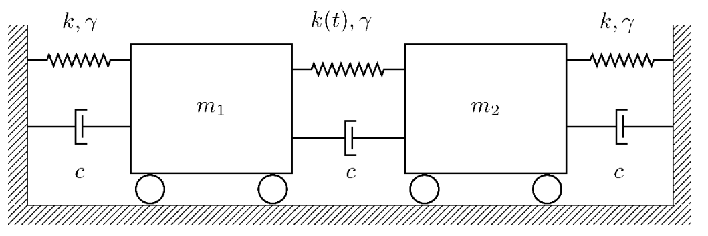 </p><p>The linear stiffness actuation takes the form 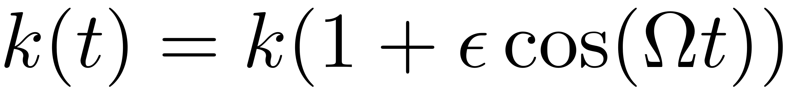. The oscillators are furthermore coupled via nonlinear springs with coefficient .</p><pre class="codeinput">clear <span class="string">all</span>; close <span class="string">all</span>; clc
</pre><h2 id="2">Generate model</h2><pre class="codeinput">[M,C,K,fnl,fext] = build_model();
</pre><h2 id="3">Dynamical system setup</h2><p>We consider the parametrically excited system</p><p></p><p>which can be written in the first-order form as</p><p></p><p></p><p>where</p><p></p><pre class="codeinput">DS = <a href="../../../../Library/DynamicalSystem/DynamicalSystem.html">DynamicalSystem</a>();
set(DS,<span class="string">'M'</span>,M,<span class="string">'C'</span>,C,<span class="string">'K'</span>,K,<span class="string">'fnl'</span>,fnl);
set(DS.<a href="../../../../Library/Features/Options/Options.html">Options</a>,<span class="string">'notation'</span>,<span class="string">'multiindex'</span>)
</pre><h2 id="4">Add forcing</h2><p>The dynamical system is forced parametrically with</p><p>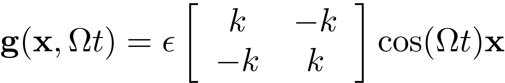</p><pre class="codeinput">DS.<a href="../../../../Library/DynamicalSystem/add_forcing.html">add_forcing</a>(fext,0.3);
</pre><h2 id="5">Linear Modal Analysis</h2><pre class="codeinput"><span class="comment">% Analyse spectrum</span>
[V,D,W_evec] = DS.<a href="../../../../Library/DynamicalSystem/linear_spectral_analysis.html">linear_spectral_analysis</a>();

<span class="comment">% Choose Master subspace (perform resonance analysis)</span>

<span class="comment">% Set up SSM object</span>
S = <a href="../../../../Library/SSM/SSM.html">SSM</a>(DS);
set(S.<a href="../../../../Library/Features/Options/Options.html">Options</a>, <span class="string">'reltol'</span>, 0.5,<span class="string">'notation'</span>,<span class="string">'multiindex'</span>)

<span class="comment">%Choose Master subspace</span>
resModes = [3,4];
S.<a href="../../../../Library/Manifold/choose_E.html">choose_E</a>(resModes);
</pre><pre class="codeoutput">
 The first 4 nonzero eigenvalues are given as 
  -0.0250 + 0.9997i
  -0.0250 - 0.9997i
  -0.0750 + 1.7304i
  -0.0750 - 1.7304i

sigma_out = 0
sigma_in = 1
</pre><h2 id="6">Forced response curves using SSMs</h2><p>Obtaining <b>forced response curve</b> in reduced-polar coordinate</p><pre class="codeinput">order = 7; <span class="comment">% Approximation order</span>
</pre><p>setup options</p><pre class="codeinput">outdof = 1;
set(S.<a href="../../../../Library/Features/Options/Options.html">Options</a>,    <span class="string">'reltol'</span>, 0.5,<span class="string">'IRtol'</span>,0.02,<span class="string">'notation'</span>, <span class="string">'multiindex'</span>,<span class="string">'contribNonAuto'</span>,true)
set(S.<a href="../../../../Library/Features/Options/Options.html">FRCOptions</a>, <span class="string">'nt'</span>, 2^7)
set(S.<a href="../../../../Library/Features/Options/Options.html">FRCOptions</a>, <span class="string">'outdof'</span>,outdof, <span class="string">'coordinates'</span>,<span class="string">'cartesian'</span>)
set(S.<a href="../../../../Library/Features/Options/Options.html">FRCOptions</a>, <span class="string">'branchSwitch'</span>,true,<span class="string">'periodsRatio'</span>,2) <span class="comment">%continue BPs of primary branch, 2T response</span>
set(S.contOptions,<span class="string">'PtMX'</span>,35,<span class="string">'h_min'</span>,1e-4,<span class="string">'h0'</span>,1e-4,<span class="string">'bi_direct'</span>,false)
</pre><p>choose frequency range around the master mode frequency</p><pre class="codeinput">omega0 = imag(S.E.spectrum(1));
OmegaRange =[3.35,4.1]  <span class="comment">% Subharmonic resonance at Omega = 2 omega_0</span>

epSamp = [0.255, 0.265 , 0.275];
</pre><pre class="codeoutput">
OmegaRange =

    3.3500    4.1000

</pre><p>Extract forced response curve</p><pre class="codeinput">startFRCSSM = tic;

Sweep = S.<a href="../../../../Library/SSM/SSM_poSweeps.html">SSM_poSweeps</a>(<span class="string">'SSMsweep'</span>,resModes,order,epSamp,OmegaRange);
timings.FRCSSM = toc(startFRCSSM)
figFRC = gcf;
</pre><h2>Parametric excitation amplitude: epsilon = 0.255</h2><pre class="codeoutput">sigma_out = 0
sigma_in = 1
Manifold computation time at order 2 = 00:00:00
Estimated memory usage at order  2 = 9.04E-03 MB
Manifold computation time at order 3 = 00:00:00
Estimated memory usage at order  3 = 1.04E-02 MB
Manifold computation time at order 4 = 00:00:00
Estimated memory usage at order  4 = 1.25E-02 MB
Manifold computation time at order 5 = 00:00:00
Estimated memory usage at order  5 = 1.53E-02 MB
Manifold computation time at order 6 = 00:00:00
Estimated memory usage at order  6 = 1.90E-02 MB
Manifold computation time at order 7 = 00:00:00
Estimated memory usage at order  7 = 2.36E-02 MB

 Run='SSMsweep0.255.po': Continue primary family of periodic orbits.

    STEP   DAMPING               NORMS              COMPUTATION TIMES
  IT SIT     GAMMA     ||d||     ||f||     ||U||   F(x)  DF(x)  SOLVE
   0                          0.00e+00  7.12e+00    0.0    0.0    0.0

 STEP      TIME        ||U||  LABEL  TYPE            om    po.period         amp1        Znorm
    0  00:00:00   7.1170e+00      1  EP      3.3500e+00   3.7512e+00   0.0000e+00   0.0000e+00
   10  00:00:06   7.1100e+00      2          3.3822e+00   3.7154e+00   0.0000e+00   0.0000e+00
   16  00:00:11   7.2438e+00      3  EP      4.1000e+00   3.0650e+00   0.0000e+00   0.0000e+00
</pre><h2>Parametric excitation amplitude: epsilon = 0.265</h2><pre class="codeoutput">

sigma_out = 0
sigma_in = 1
Manifold computation time at order 2 = 00:00:00
Estimated memory usage at order  2 = 9.04E-03 MB
Manifold computation time at order 3 = 00:00:00
Estimated memory usage at order  3 = 1.04E-02 MB
Manifold computation time at order 4 = 00:00:00
Estimated memory usage at order  4 = 1.25E-02 MB
Manifold computation time at order 5 = 00:00:00
Estimated memory usage at order  5 = 1.53E-02 MB
Manifold computation time at order 6 = 00:00:00
Estimated memory usage at order  6 = 1.90E-02 MB
Manifold computation time at order 7 = 00:00:00
Estimated memory usage at order  7 = 2.36E-02 MB

 Run='SSMsweep0.265.po': Continue primary family of periodic orbits.

    STEP   DAMPING               NORMS              COMPUTATION TIMES
  IT SIT     GAMMA     ||d||     ||f||     ||U||   F(x)  DF(x)  SOLVE
   0                          0.00e+00  7.12e+00    0.0    0.0    0.0

 STEP      TIME        ||U||  LABEL  TYPE            om    po.period         amp1        Znorm
    0  00:00:00   7.1174e+00      1  EP      3.3500e+00   3.7512e+00   0.0000e+00   0.0000e+00
   10  00:00:05   7.1104e+00      2          3.3822e+00   3.7154e+00   0.0000e+00   0.0000e+00
   12  00:00:15   7.1025e+00      3  SN      3.4300e+00   3.6637e+00   0.0000e+00   0.0000e+00
   12  00:00:15   7.1025e+00      4  BP      3.4300e+00   3.6637e+00   0.0000e+00   0.0000e+00
   13  00:00:24   7.0964e+00      5  SN      3.4917e+00   3.5989e+00   0.0000e+00   0.0000e+00
   13  00:00:24   7.0964e+00      6  BP      3.4917e+00   3.5989e+00   0.0000e+00   0.0000e+00
   16  00:00:27   7.2442e+00      7  EP      4.1000e+00   3.0650e+00   0.0000e+00   0.0000e+00

 Run='SSMsweep0.265.po_BP_1': Continue secondary branch of periodic orbits in 'SSMsweep0.265.po' .

 STEP      TIME        ||U||  LABEL  TYPE            om    po.period         amp1        Znorm
    0  00:00:00   7.1025e+00      1  EP      3.4300e+00   3.6637e+00   0.0000e+00   0.0000e+00
    1  00:00:03   7.1025e+00      2  BP      3.4300e+00   3.6637e+00   1.0349e-11   2.0672e-11
    1  00:00:03   7.1025e+00      3  FP      3.4300e+00   3.6637e+00   9.2136e-06   1.8405e-05
    2  00:00:03   7.1025e+00      4  FP      3.4300e+00   3.6637e+00   3.3078e-05   6.6076e-05
    3  00:00:03   7.1025e+00      5  FP      3.4300e+00   3.6637e+00   7.6820e-05   1.5345e-04
    4  00:00:04   7.1025e+00      6  FP      3.4300e+00   3.6637e+00   1.4526e-04   2.9017e-04
   10  00:00:05   7.1028e+00      7          3.4300e+00   3.6636e+00   8.0930e-03   1.6166e-02
   20  00:00:11   8.0818e+00      8          3.5309e+00   3.5589e+00   4.5639e-01   9.2485e-01
   30  00:00:17   8.1791e+00      9          3.5482e+00   3.5416e+00   4.7948e-01   9.7295e-01
   35  00:00:18   8.1772e+00     10  EP      3.5493e+00   3.5405e+00   4.7900e-01   9.7199e-01

 Run='SSMsweep0.265.po_BP_2': Continue secondary branch of periodic orbits in 'SSMsweep0.265.po' .

 STEP      TIME        ||U||  LABEL  TYPE            om    po.period         amp1        Znorm
    0  00:00:00   7.0964e+00      1  EP      3.4917e+00   3.5989e+00   0.0000e+00   0.0000e+00
    1  00:00:03   7.0964e+00      2  BP      3.4917e+00   3.5989e+00   1.0362e-11   2.0654e-11
    1  00:00:03   7.0964e+00      3  FP      3.4917e+00   3.5989e+00   9.2254e-06   1.8389e-05
    2  00:00:03   7.0964e+00      4  FP      3.4917e+00   3.5989e+00   3.3119e-05   6.6017e-05
    3  00:00:03   7.0964e+00      5  FP      3.4917e+00   3.5989e+00   7.6942e-05   1.5337e-04
    4  00:00:04   7.0964e+00      6  FP      3.4917e+00   3.5989e+00   1.4485e-04   2.8873e-04
   10  00:00:06   7.0967e+00      7          3.4917e+00   3.5989e+00   8.1033e-03   1.6152e-02
   20  00:00:11   8.0842e+00      8          3.5491e+00   3.5407e+00   4.5721e-01   9.2586e-01
   22  00:00:18   8.1483e+00      9  SN      3.5506e+00   3.5392e+00   4.7239e-01   9.5779e-01
   22  00:00:18   8.1485e+00     10  FP      3.5506e+00   3.5392e+00   4.7242e-01   9.5787e-01
   30  00:00:21   8.1787e+00     11          3.5484e+00   3.5414e+00   4.7938e-01   9.7275e-01
   35  00:00:23   8.1785e+00     12  EP      3.5472e+00   3.5426e+00   4.7935e-01   9.7267e-01
</pre><h2>Parametric excitation amplitude: epsilon = 0.275</h2><pre class="codeoutput">
sigma_out = 0
sigma_in = 1
Manifold computation time at order 2 = 00:00:00
Estimated memory usage at order  2 = 9.04E-03 MB
Manifold computation time at order 3 = 00:00:00
Estimated memory usage at order  3 = 1.04E-02 MB
Manifold computation time at order 4 = 00:00:00
Estimated memory usage at order  4 = 1.25E-02 MB
Manifold computation time at order 5 = 00:00:00
Estimated memory usage at order  5 = 1.53E-02 MB
Manifold computation time at order 6 = 00:00:00
Estimated memory usage at order  6 = 1.90E-02 MB
Manifold computation time at order 7 = 00:00:00
Estimated memory usage at order  7 = 2.36E-02 MB

 Run='SSMsweep0.275.po': Continue primary family of periodic orbits.

    STEP   DAMPING               NORMS              COMPUTATION TIMES
  IT SIT     GAMMA     ||d||     ||f||     ||U||   F(x)  DF(x)  SOLVE
   0                          0.00e+00  7.12e+00    0.0    0.0    0.0

 STEP      TIME        ||U||  LABEL  TYPE            om    po.period         amp1        Znorm
    0  00:00:00   7.1178e+00      1  EP      3.3500e+00   3.7512e+00   0.0000e+00   0.0000e+00
   10  00:00:04   7.1108e+00      2          3.3822e+00   3.7154e+00   0.0000e+00   0.0000e+00
   11  00:00:13   7.1061e+00      3  SN      3.4084e+00   3.6869e+00   0.0000e+00   0.0000e+00
   11  00:00:13   7.1061e+00      4  BP      3.4084e+00   3.6869e+00   0.0000e+00   0.0000e+00
   13  00:00:23   7.0957e+00      5  SN      3.5133e+00   3.5768e+00   0.0000e+00   0.0000e+00
   13  00:00:23   7.0957e+00      6  BP      3.5133e+00   3.5768e+00   0.0000e+00   0.0000e+00
   16  00:00:26   7.2446e+00      7  EP      4.1000e+00   3.0650e+00   0.0000e+00   0.0000e+00

 Run='SSMsweep0.275.po_BP_1': Continue secondary branch of periodic orbits in 'SSMsweep0.275.po' .

 STEP      TIME        ||U||  LABEL  TYPE            om    po.period         amp1        Znorm
    0  00:00:00   7.1061e+00      1  EP      3.4084e+00   3.6869e+00   0.0000e+00   0.0000e+00
    1  00:00:02   7.1061e+00      2  BP      3.4084e+00   3.6869e+00   1.0347e-11   2.0678e-11
    1  00:00:02   7.1061e+00      3  FP      3.4084e+00   3.6869e+00   9.2118e-06   1.8410e-05
    2  00:00:03   7.1061e+00      4  FP      3.4084e+00   3.6869e+00   3.3027e-05   6.6007e-05
   10  00:00:05   7.1064e+00      5          3.4084e+00   3.6869e+00   8.0914e-03   1.6171e-02
   20  00:00:10   8.0881e+00      6          3.4986e+00   3.5919e+00   4.5724e-01   9.2779e-01
   30  00:00:15   1.0119e+01      7          3.7123e+00   3.3851e+00   8.3125e-01   1.7421e+00
   35  00:00:17   1.0150e+01      8  EP      3.7187e+00   3.3793e+00   8.3584e-01   1.7527e+00

 Run='SSMsweep0.275.po_BP_2': Continue secondary branch of periodic orbits in 'SSMsweep0.275.po' .

 STEP      TIME        ||U||  LABEL  TYPE            om    po.period         amp1        Znorm
    0  00:00:00   7.0957e+00      1  EP      3.5133e+00   3.5768e+00   0.0000e+00   0.0000e+00
    1  00:00:03   7.0957e+00      2  BP      3.5133e+00   3.5768e+00   1.0371e-11   2.0650e-11
    1  00:00:03   7.0957e+00      3  FP      3.5133e+00   3.5768e+00   9.2338e-06   1.8385e-05
    2  00:00:03   7.0957e+00      4  FP      3.5133e+00   3.5768e+00   3.3157e-05   6.6016e-05
    3  00:00:04   7.0957e+00      5  FP      3.5133e+00   3.5768e+00   7.6883e-05   1.5308e-04
    4  00:00:04   7.0957e+00      6  FP      3.5133e+00   3.5768e+00   1.4833e-04   2.9533e-04
   10  00:00:06   7.0960e+00      7          3.5134e+00   3.5767e+00   8.1107e-03   1.6149e-02
   20  00:00:11   8.0890e+00      8          3.5824e+00   3.5079e+00   4.5853e-01   9.2735e-01
   30  00:00:17   1.0122e+01      9          3.7218e+00   3.3764e+00   8.3156e-01   1.7423e+00
   31  00:00:22   1.0131e+01     10  SN      3.7219e+00   3.3764e+00   8.3302e-01   1.7458e+00
   31  00:00:22   1.0131e+01     11  FP      3.7219e+00   3.3764e+00   8.3303e-01   1.7458e+00
   35  00:00:24   1.0150e+01     12  EP      3.7209e+00   3.3772e+00   8.3573e-01   1.7526e+00

timings = 

  struct with fields:

    FRCSSM: 155.1649

</pre>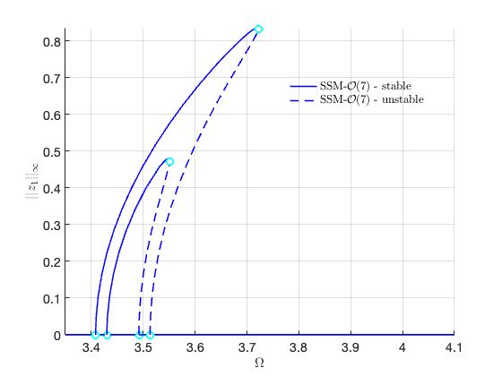 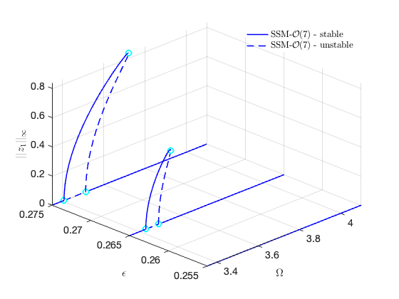 <h2 id="10">Get results from full system</h2><pre class="codeinput">nCycles = 10;

coco = <a href="../../../../Library/Features/Wrappers/cocoWrapper/cocoWrapper.html">cocoWrapper</a>(DS, nCycles, outdof);
set(coco,<span class="string">'initialGuess'</span>,<span class="string">'forward'</span>)
set(coco,<span class="string">'branchSwitch'</span>,<span class="string">'true'</span>,<span class="string">'periodsRatio'</span>,2) <span class="comment">% include new branches, 2T periodic response</span>
set(coco.<a href="../../../../Library/Features/Options/Options.html">Options</a>, <span class="string">'NAdapt'</span>, 1);
set(coco.<a href="../../../../Library/Features/Options/Options.html">Options</a>,<span class="string">'ItMX'</span>,15,<span class="string">'NTST'</span>, 30,<span class="string">'PtMX'</span>,60,<span class="string">'bi_direct'</span>,false,<span class="string">'h0'</span>,1e-4); <span class="comment">%for convergence, smaller stepsize</span>

figure(figFRC)
hold <span class="string">on</span>
startcoco = tic;
Sweep_coco = coco.<a href="../../../../Library/Features/Wrappers/cocoWrapper/coco_poSweeps.html">coco_poSweeps</a>(epSamp,OmegaRange);
timings.cocoFRC = toc(startcoco)
</pre><h2>Parametric excitation amplitude: epsilon = 0.255</h2>
<pre class="codeoutput">

 Run='FRC0.255': Continue primary family of periodic orbits.

    STEP   DAMPING               NORMS              COMPUTATION TIMES
  IT SIT     GAMMA     ||d||     ||f||     ||U||   F(x)  DF(x)  SOLVE
   0                          0.00e+00  7.12e+00    0.0    0.0    0.0

 STEP      TIME        ||U||  LABEL  TYPE         omega    po.period          eps         amp1
    0  00:00:00   7.1170e+00      1  EP      3.3500e+00   3.7512e+00   2.5500e-01   0.0000e+00
    8  00:00:01   7.2438e+00      2  EP      4.1000e+00   3.0650e+00   2.5500e-01   0.0000e+00
   </pre><h2>Parametric excitation amplitude: epsilon = 0.265</h2><pre class="codeoutput">

 Run='FRC0.265': Continue primary family of periodic orbits.

    STEP   DAMPING               NORMS              COMPUTATION TIMES
  IT SIT     GAMMA     ||d||     ||f||     ||U||   F(x)  DF(x)  SOLVE
   0                          0.00e+00  7.12e+00    0.0    0.0    0.0

 STEP      TIME        ||U||  LABEL  TYPE         omega    po.period          eps         amp1
    0  00:00:00   7.1174e+00      1  EP      3.3500e+00   3.7512e+00   2.6500e-01   0.0000e+00
    5  00:00:01   7.1026e+00      2  SN      3.4290e+00   3.6648e+00   2.6500e-01   0.0000e+00
    5  00:00:01   7.1026e+00      3  BP      3.4290e+00   3.6648e+00   2.6500e-01   0.0000e+00
    6  00:00:02   7.0965e+00      4  SN      3.4894e+00   3.6013e+00   2.6500e-01   0.0000e+00
    6  00:00:02   7.0965e+00      5  BP      3.4894e+00   3.6013e+00   2.6500e-01   0.0000e+00
    8  00:00:02   7.2442e+00      6  EP      4.1000e+00   3.0650e+00   2.6500e-01   0.0000e+00

 Run='FRC0.265.1': Continue equilibria along secondary branch.

 STEP      TIME        ||U||  LABEL  TYPE         omega    po.period          eps         amp1
    0  00:00:00   7.1026e+00      1  EP      3.4290e+00   3.6648e+00   2.6500e-01   0.0000e+00
    1  00:00:00   7.1026e+00      2  BP      3.4290e+00   3.6648e+00   2.6500e-01   3.5690e-10
   10  00:00:01   7.4854e+00      3          3.4352e+00   3.6582e+00   2.6500e-01   1.1550e-01
   20  00:00:02   9.9606e+00      4          3.4964e+00   3.5941e+00   2.6500e-01   3.7591e-01
   30  00:00:03   1.1216e+01      5          3.5415e+00   3.5484e+00   2.6500e-01   4.6534e-01
   40  00:00:03   1.1202e+01      6          3.5443e+00   3.5455e+00   2.6500e-01   4.6427e-01
   47  00:00:04   1.1110e+01      7  FP      3.5452e+00   3.5446e+00   2.6500e-01   4.5789e-01
   47  00:00:04   1.1110e+01      8  SN      3.5452e+00   3.5446e+00   2.6500e-01   4.5789e-01
   50  00:00:04   1.0947e+01      9          3.5444e+00   3.5455e+00   2.6500e-01   4.4678e-01
   60  00:00:05   8.2625e+00     10  EP      3.5056e+00   3.5847e+00   2.6500e-01   2.2814e-01

 Run='FRC0.265.2': Continue equilibria along secondary branch.

 STEP      TIME        ||U||  LABEL  TYPE         omega    po.period          eps         amp1
    0  00:00:00   7.0965e+00      1  EP      3.4894e+00   3.6013e+00   2.6500e-01   0.0000e+00
    1  00:00:00   7.0965e+00      2  BP      3.4894e+00   3.6013e+00   2.6500e-01   3.5384e-10
   10  00:00:01   7.4795e+00      3          3.4936e+00   3.5970e+00   2.6500e-01   1.1511e-01
   20  00:00:02   9.9780e+00      4          3.5315e+00   3.5584e+00   2.6500e-01   3.7679e-01
   24  00:00:02   1.1108e+01      5  FP      3.5452e+00   3.5446e+00   2.6500e-01   4.5786e-01
   24  00:00:02   1.1108e+01      6  SN      3.5452e+00   3.5446e+00   2.6500e-01   4.5789e-01
   30  00:00:03   1.1216e+01      7          3.5435e+00   3.5463e+00   2.6500e-01   4.6531e-01
   40  00:00:03   1.1201e+01      8          3.5399e+00   3.5499e+00   2.6500e-01   4.6434e-01
   50  00:00:04   1.0927e+01      9          3.5272e+00   3.5627e+00   2.6500e-01   4.4576e-01
   60  00:00:05   8.2084e+00     10  EP      3.4521e+00   3.6402e+00   2.6500e-01   2.2292e-01
</pre><h2>Parametric excitation amplitude: epsilon = 0.275</h2><pre class="codeoutput">

 Run='FRC0.275': Continue primary family of periodic orbits.

    STEP   DAMPING               NORMS              COMPUTATION TIMES
  IT SIT     GAMMA     ||d||     ||f||     ||U||   F(x)  DF(x)  SOLVE
   0                          0.00e+00  7.12e+00    0.0    0.0    0.0

 STEP      TIME        ||U||  LABEL  TYPE         omega    po.period          eps         amp1
    0  00:00:00   7.1178e+00      1  EP      3.3500e+00   3.7512e+00   2.7500e-01   0.0000e+00
    4  00:00:01   7.1063e+00      2  SN      3.4070e+00   3.6884e+00   2.7500e-01   0.0000e+00
    4  00:00:01   7.1063e+00      3  BP      3.4070e+00   3.6884e+00   2.7500e-01   0.0000e+00
    6  00:00:02   7.0958e+00      4  SN      3.5111e+00   3.5790e+00   2.7500e-01   0.0000e+00
    6  00:00:02   7.0958e+00      5  BP      3.5111e+00   3.5790e+00   2.7500e-01   0.0000e+00
    8  00:00:02   7.2446e+00      6  EP      4.1000e+00   3.0650e+00   2.7500e-01   0.0000e+00

 Run='FRC0.275.1': Continue equilibria along secondary branch.

 STEP      TIME        ||U||  LABEL  TYPE         omega    po.period          eps         amp1
    0  00:00:00   7.1063e+00      1  EP      3.4070e+00   3.6884e+00   2.7500e-01   0.0000e+00
    1  00:00:00   7.1063e+00      2  BP      3.4070e+00   3.6884e+00   2.7500e-01   3.5805e-10
   10  00:00:01   7.4882e+00      3          3.4128e+00   3.6821e+00   2.7500e-01   1.1558e-01
   20  00:00:02   9.9678e+00      4          3.4688e+00   3.6227e+00   2.7500e-01   3.7670e-01
   30  00:00:02   1.3888e+01      5          3.5809e+00   3.5093e+00   2.7500e-01   6.3269e-01
   40  00:00:03   1.6853e+01      6          3.6928e+00   3.4029e+00   2.7500e-01   7.9785e-01
   50  00:00:04   1.6930e+01      7          3.7020e+00   3.3945e+00   2.7500e-01   8.0134e-01
   55  00:00:05   1.6863e+01      8  FP      3.7029e+00   3.3936e+00   2.7500e-01   7.9775e-01
   55  00:00:05   1.6863e+01      9  SN      3.7029e+00   3.3936e+00   2.7500e-01   7.9775e-01
   60  00:00:05   1.6637e+01     10  EP      3.7007e+00   3.3957e+00   2.7500e-01   7.8562e-01

 Run='FRC0.275.2': Continue equilibria along secondary branch.

 STEP      TIME        ||U||  LABEL  TYPE         omega    po.period          eps         amp1
    0  00:00:00   7.0958e+00      1  EP      3.5111e+00   3.5790e+00   2.7500e-01   0.0000e+00
    1  00:00:00   7.0958e+00      2  BP      3.5111e+00   3.5790e+00   2.7500e-01   3.5264e-10
   10  00:00:01   7.4788e+00      3          3.5156e+00   3.5744e+00   2.7500e-01   1.1495e-01
   20  00:00:01   9.9849e+00      4          3.5590e+00   3.5309e+00   2.7500e-01   3.7648e-01
   30  00:00:02   1.3903e+01      5          3.6417e+00   3.4507e+00   2.7500e-01   6.3228e-01
   40  00:00:03   1.6855e+01      6          3.7029e+00   3.3936e+00   2.7500e-01   7.9735e-01
   41  00:00:04   1.6861e+01      7  SN      3.7029e+00   3.3936e+00   2.7500e-01   7.9774e-01
   41  00:00:04   1.6862e+01      8  FP      3.7029e+00   3.3936e+00   2.7500e-01   7.9774e-01
   50  00:00:04   1.6928e+01      9          3.6984e+00   3.3977e+00   2.7500e-01   8.0167e-01
   60  00:00:05   1.6630e+01     10  EP      3.6815e+00   3.4133e+00   2.7500e-01   7.8620e-01

timings = 

  struct with fields:

     FRCSSM: 155.1649
    cocoFRC: 31.7683

</pre>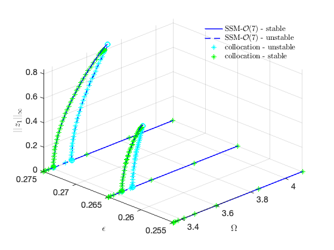 <h2 id="11">Stability Diagram from Reduced Dynamics</h2><p>We extract the stability diagram using continuation of bifurcations. By extending the dynamical system</p><p></p><p>to an autonomous system of variables 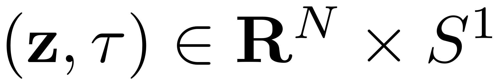 the trivial fixed point  of the paremtrically excited system can be interpreted as the periodic orbit  . Any change of the stability behaviour of this periodic orbit is then given by some bifurcation. At the stability boundary of the principal resonance with 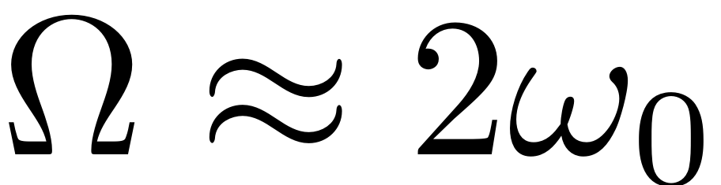 nontrivial periodic orbits with response period  emerge. If continuation of  periodic orbits is used then these bifurcations show up as period doubling ('PD') bifurcations. Initially continuing  periodic orbits leads to a saddle node ('SN') bifurcation. The function extract_Stability_Diagram allows to chose between these two options for constructing the stability diagram.</p><pre class="codeinput">set(S.contOptions,<span class="string">'PtMX'</span>,50,<span class="string">'bi_direct'</span>,true)
set(S.<a href="../../../../Library/Features/Options/Options.html">FRCOptions</a>,<span class="string">'branchSwitch'</span>,true)
PlotSD = true;

p0 = [2*omega0,0]; <span class="comment">% Initial condition</span>
epRange = [0,1];
figure();
startSDSSM = tic;
SD = S.<a href="../../../../Library/Features/Wrappers/cocoWrapper/extract_Stability_Diagram.html">extract_Stability_Diagram</a>(resModes, order, OmegaRange,epRange,<span class="string">'amp'</span>, p0,<span class="string">'PD'</span>,PlotSD);
timings.SDSSM = toc(startSDSSM)
figSD = gcf;
</pre><pre class="codeoutput">sigma_out = 0
sigma_in = 1
Manifold computation time at order 2 = 00:00:00
Estimated memory usage at order  2 = 9.04E-03 MB
Manifold computation time at order 3 = 00:00:00
Estimated memory usage at order  3 = 1.04E-02 MB
Manifold computation time at order 4 = 00:00:00
Estimated memory usage at order  4 = 1.25E-02 MB
Manifold computation time at order 5 = 00:00:00
Estimated memory usage at order  5 = 1.53E-02 MB
Manifold computation time at order 6 = 00:00:00
Estimated memory usage at order  6 = 1.90E-02 MB
Manifold computation time at order 7 = 00:00:00
Estimated memory usage at order  7 = 2.36E-02 MB

    STEP   DAMPING               NORMS              COMPUTATION TIMES
  IT SIT     GAMMA     ||d||     ||f||     ||U||   F(x)  DF(x)  SOLVE
   0                          0.00e+00  4.31e+00    0.0    0.0    0.0

 STEP      TIME        ||U||  LABEL  TYPE           eps    po.period
    0  00:00:00   4.3092e+00      1  EP      0.0000e+00   1.8155e+00
   10  00:00:00   4.3098e+00      2          4.8092e-02   1.8155e+00
   13  00:00:01   4.3249e+00      3  PD      2.5956e-01   1.8155e+00
   16  00:00:01   4.5354e+00      4  EP      1.0000e+00   1.8155e+00

 Run='ROM_family_bif1': Continue bifurcations from point 3 in run 'ROM_detect_bif'.

    STEP   DAMPING               NORMS              COMPUTATION TIMES
  IT SIT     GAMMA     ||d||     ||f||     ||U||   F(x)  DF(x)  SOLVE
   0                          6.68e-08  8.98e+00    0.0    0.0    0.0

 STEP      TIME        ||U||  LABEL  TYPE            om    po.period          eps
    0  00:00:00   8.9823e+00      1  EP      3.4609e+00   1.8155e+00   2.5956e-01
   10  00:00:03   8.9807e+00      2          3.4580e+00   1.8170e+00   2.5961e-01
   17  00:00:07   8.9269e+00      3  EP      3.3500e+00   1.8756e+00   3.2275e-01

 STEP      TIME        ||U||  LABEL  TYPE            om    po.period          eps
    0  00:00:07   8.9823e+00      4  EP      3.4609e+00   1.8155e+00   2.5956e-01
   10  00:00:09   8.9839e+00      5          3.4637e+00   1.8140e+00   2.5961e-01
   20  00:00:15   9.1531e+00      6          3.7106e+00   1.6933e+00   5.0411e-01
   30  00:00:21   9.5341e+00      7  EP      4.1000e+00   1.5325e+00   1.1360e+00
Total time spent on Stability Diagram computation = 00:00:24

timings = 

  struct with fields:

     FRCSSM: 155.1649
    cocoFRC: 31.7683
      SDSSM: 24.2804

</pre>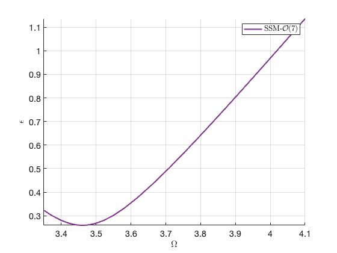 <h2 id="12">Verification: Collocation using <a href="https://sourceforge.net/p/cocotools/wiki/Home/">coco</a></h2><p>Dankowicz, H., &amp; Schilder, F. (2013).  <i>Recipes for Continuation,</i> SIAM Philadelphia. <a href="https://doi.org/10.1137/1.9781611972573">https://doi.org/10.1137/1.9781611972573</a></p><pre class="codeinput">nCycles = 10;

coco_sd = <a href="../../../../Library/Features/Wrappers/cocoWrapper/cocoWrapper.html">cocoWrapper</a>(DS, nCycles, []);
set(coco_sd.<a href="../../../../Library/Features/Options/Options.html">Options</a>,  <span class="string">'PtMX'</span>,10, <span class="string">'bi_direct'</span>,true);
set(coco_sd,<span class="string">'branchSwitch'</span>,true)

figure(figSD);
hold <span class="string">on</span>;
startcoco = tic;
SD_full = coco_sd.<a href="../../../../Library/Features/Wrappers/cocoWrapper/extract_Stability_Diagram.html">extract_Stability_Diagram</a>(OmegaRange,epRange,<span class="string">'amp'</span>,p0,<span class="string">'SN'</span>,PlotSD);
timings.cocoSD = toc(startcoco)
</pre><pre class="codeoutput">
 Run='full_detect_bif': Continue primary family of periodic orbits.

    STEP   DAMPING               NORMS              COMPUTATION TIMES
  IT SIT     GAMMA     ||d||     ||f||     ||U||   F(x)  DF(x)  SOLVE
   0                          0.00e+00  6.09e+00    0.0    0.0    0.0

 STEP      TIME        ||U||  LABEL  TYPE           eps           om
    0  00:00:00   6.0942e+00      1  EP      0.0000e+00   3.4609e+00
    6  00:00:01   6.1053e+00      2  SN      2.5979e-01   3.4609e+00
    6  00:00:01   6.1053e+00      3  BP      2.5979e-01   3.4609e+00
    8  00:00:01   6.2561e+00      4  EP      1.0000e+00   3.4609e+00

 Run='full_family_bif_1': Continue bifurcations from point 2 in run 'full_detect_bif'.

    STEP   DAMPING               NORMS              COMPUTATION TIMES
  IT SIT     GAMMA     ||d||     ||f||     ||U||   F(x)  DF(x)  SOLVE
   0                          1.48e-07  1.38e+01    0.0    0.0    0.0

 STEP      TIME        ||U||  LABEL  TYPE            om    po.period          eps
    0  00:00:00   1.3791e+01      1  EP      3.4609e+00   3.6310e+00   2.5979e-01
    1  00:00:00   1.3789e+01      2  BP      3.4607e+00   3.6311e+00   2.5979e-01
Warning: Matrix is close to singular or badly scaled. Results may be
inaccurate. RCOND =  1.799230e-16. 
   10  00:00:02   1.1419e+01      3  EP      3.3867e+00   3.7105e+00   2.8833e-01

 STEP      TIME        ||U||  LABEL  TYPE            om    po.period          eps
    0  00:00:03   1.3791e+01      4  EP      3.4609e+00   3.6310e+00   2.5979e-01
    1  00:00:03   1.3792e+01      5  BP      3.4610e+00   3.6309e+00   2.5979e-01
Warning: Matrix is close to singular or badly scaled. Results may be
inaccurate. RCOND =  2.055152e-16. 
   10  00:00:05   1.3131e+01      6  EP      3.5232e+00   3.5667e+00   2.8266e-01

timings = 

  struct with fields:

     FRCSSM: 155.1649
    cocoFRC: 31.7683
      SDSSM: 24.2804
     cocoSD: 7.4364

</pre>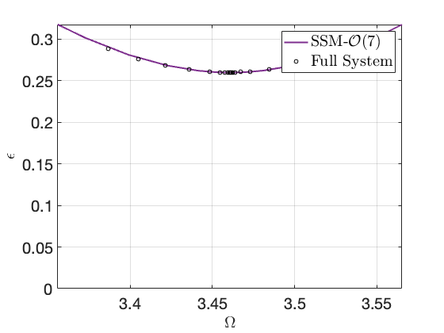 <p>plot for paper</p><pre class="codeinput">MEplotSDintoSweep(figFRC,SD_full,3.8)
xlim([3.39,3.75])
</pre>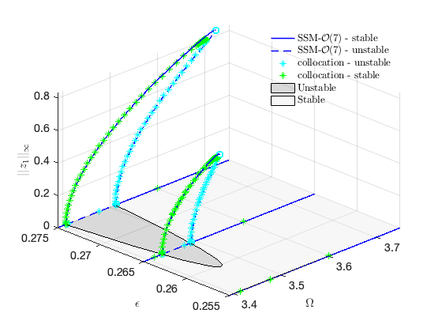 <p class="footer"><br/><a href="https://www.mathworks.com/products/matlab/">Published with MATLAB® R2023a</a><br/></p></div><!--
##### SOURCE BEGIN #####
%% 2 dimensional Mathieu Equation
%
%%
% We consider two oscillators that are coupled via a nonlinear spring with time 
% varying linear stiffness coefficients.
% 
% <<model.png>>
% 
% The linear stiffness actuation takes the form $k(t) = k(1+ \epsilon \cos (\Omega 
% t))$. The oscillators are furthermore coupled via nonlinear springs with coefficient 
% $\kappa$.

clear all; close all; clc
%% Generate model

[M,C,K,fnl,fext] = build_model();
%% Dynamical system setup
% We consider the parametrically excited system
% 
% $$\mathbf{M}\ddot{\mathbf{x}}+\mathbf{C}\dot{\mathbf{x}}+\mathbf{K}\mathbf{x}+\mathbf{f}(\mathbf{x},\dot{\mathbf{x}})=\epsilon\mathbf{g}(\mathbf{x},\dot{\mathbf{x}},\Omega 
% t),$$
% 
% which can be written in the first-order form as 
% 
% $$\mathbf{B}\dot{\mathbf{z}}=\mathbf{Az}+\mathbf{F}(\mathbf{z})+\epsilon\mathbf{G}(\mathbf{z},\phi)$$
% 
% $$\dot{\mathbf{\phi}}=\mathbf{\Omega}$$
% 
% where
% 
% $$\mathbf{z}=\left[\begin{array}{c}\mathbf{x}\\\dot{\mathbf{x}}\end{array}\right],\quad\mathbf{A}=\left[\begin{array}{cc}-\mathbf{K} 
% & \mathbf{0}\\\mathbf{0} & \mathbf{M}\end{array}\right],\mathbf{B}=\left[\begin{array}{cc}\mathbf{C} 
% & \mathbf{M}\\\mathbf{M} & \mathbf{0}\end{array}\right],\quad\quad\mathbf{F}(\mathbf{z})=\left[\begin{array}{c}\mathbf{-\mathbf{f}(\mathbf{x},\dot{\mathbf{x}})}\\\mathbf{0}\end{array}\right],\quad\mathbf{G}(\mathbf{z},\mathbf{\phi})=\left[\begin{array}{c}\mathbf{g}(\mathbf{x, 
% \dot{x}},\phi)\\\mathbf{0}\end{array}\right]$$

DS = <a href="../../../../Library/DynamicalSystem/DynamicalSystem.html">DynamicalSystem</a>();
set(DS,'M',M,'C',C,'K',K,'fnl',fnl);
set(DS.<a href="../../../../Library/Features/Options/Options.html">Options</a>,'notation','multiindex')
%% Add forcing
% The dynamical system is forced parametrically with 
% 
% $\mathbf{g(x},\Omega t) 
% = \epsilon\left[\begin{array}{cc} k & -k \\ -k &  k \end{array}\right] \cos(\Omega 
% t) \mathbf{x}$

DS.<a href="../../../../Library/DynamicalSystem/add_forcing.html">add_forcing</a>(fext,0.3);
%% Linear Modal Analysis 

% Analyse spectrum
[V,D,W_evec] = DS.<a href="../../../../Library/DynamicalSystem/linear_spectral_analysis.html">linear_spectral_analysis</a>();

% Choose Master subspace (perform resonance analysis)

% Set up SSM object
S = <a href="../../../../Library/SSM/SSM.html">SSM</a>(DS);
set(S.<a href="../../../../Library/Features/Options/Options.html">Options</a>, 'reltol', 0.5,'notation','multiindex')

%Choose Master subspace
resModes = [3,4];
S.<a href="../../../../Library/Manifold/choose_E.html">choose_E</a>(resModes);
%% Forced response curves using SSMs
% Obtaining *forced response curve* in reduced-polar coordinate

order = 7; % Approximation order
%% 
% setup options

outdof = 1;
set(S.<a href="../../../../Library/Features/Options/Options.html">Options</a>,    'reltol', 0.5,'IRtol',0.02,'notation', 'multiindex','contribNonAuto',true)
set(S.<a href="../../../../Library/Features/Options/Options.html">FRCOptions</a>, 'nt', 2^7)
set(S.<a href="../../../../Library/Features/Options/Options.html">FRCOptions</a>, 'outdof',outdof, 'coordinates','cartesian')
set(S.<a href="../../../../Library/Features/Options/Options.html">FRCOptions</a>, 'branchSwitch',true,'periodsRatio',2) %continue BPs of primary branch, 2T response
set(S.contOptions,'PtMX',35,'h_min',1e-4,'h0',1e-4,'bi_direct',false)
%% 
% choose frequency range around the master mode frequency

omega0 = imag(S.E.spectrum(1));
OmegaRange =[3.35,4.1]  % Subharmonic resonance at Omega = 2 omega_0

epSamp = [0.255, 0.265 , 0.275];

%% 
% Extract forced response curve

startFRCSSM = tic;

Sweep = S.<a href="../../../../Library/SSM/SSM_poSweeps.html">SSM_poSweeps</a>('SSMsweep',resModes,order,epSamp,OmegaRange);
timings.FRCSSM = toc(startFRCSSM)
figFRC = gcf;
%% Get results from full system

nCycles = 10;

coco = <a href="../../../../Library/Features/Wrappers/cocoWrapper/cocoWrapper.html">cocoWrapper</a>(DS, nCycles, outdof);
set(coco,'initialGuess','forward')
set(coco,'branchSwitch','true','periodsRatio',2) % include new branches, 2T periodic response
set(coco.<a href="../../../../Library/Features/Options/Options.html">Options</a>, 'NAdapt', 1);
set(coco.<a href="../../../../Library/Features/Options/Options.html">Options</a>,'ItMX',15,'NTST', 30,'PtMX',60,'bi_direct',false,'h0',1e-4); %for convergence, smaller stepsize

figure(figFRC)
hold on
startcoco = tic;
Sweep_coco = coco.<a href="../../../../Library/Features/Wrappers/cocoWrapper/coco_poSweeps.html">coco_poSweeps</a>(epSamp,OmegaRange);
timings.cocoFRC = toc(startcoco)
%% Stability Diagram from Reduced Dynamics
% We extract the stability diagram using continuation of bifurcations. By extending 
% the dynamical system
% 
% $$\mathbf{B}\dot{\mathbf{z}}=\mathbf{Az}+\mathbf{F}(\mathbf{z})+\epsilon\mathbf{G}(\mathbf{z},\phi)$$
% 
% to an autonomous system of variables $(\mathbf{z}, \tau) \in \mathbf{R}^N 
% \times S^1$ the trivial fixed point $\mathbf{z} =\mathbf{0}$ of the paremtrically 
% excited system can be interpreted as the periodic orbit $(\mathbf{z}, \tau ) 
% = (\mathbf{0}, t \ \textrm{mod} \ 2\pi )$ . Any change of the stability behaviour 
% of this periodic orbit is then given by some bifurcation. At the stability boundary 
% of the principal resonance with $\Omega \approx 2 \omega_0$ nontrivial periodic 
% orbits with response period $T = 4 \pi / \Omega$ emerge. If continuation of 
% $2 \pi / \Omega$ periodic orbits is used then these bifurcations show up as 
% period doubling ('PD') bifurcations. Initially continuing $4 \pi / \Omega$ periodic 
% orbits leads to a saddle node ('SN') bifurcation. The function extract_Stability_Diagram 
% allows to chose between these two options for constructing the stability diagram.

set(S.contOptions,'PtMX',50,'bi_direct',true)
set(S.<a href="../../../../Library/Features/Options/Options.html">FRCOptions</a>,'branchSwitch',true)
PlotSD = true;

p0 = [2*omega0,0]; % Initial condition
epRange = [0,1];
figure();
startSDSSM = tic;
SD = S.<a href="../../../../Library/Features/Wrappers/cocoWrapper/extract_Stability_Diagram.html">extract_Stability_Diagram</a>(resModes, order, OmegaRange,epRange,'amp', p0,'PD',PlotSD);
timings.SDSSM = toc(startSDSSM)
figSD = gcf;
%% Verification: Collocation using <https://sourceforge.net/p/cocotools/wiki/Home/ coco>
% Dankowicz, H., & Schilder, F. (2013).  _Recipes for Continuation,_ SIAM Philadelphia. 
% https://doi.org/10.1137/1.9781611972573

nCycles = 10;

coco_sd = <a href="../../../../Library/Features/Wrappers/cocoWrapper/cocoWrapper.html">cocoWrapper</a>(DS, nCycles, []);
set(coco_sd.<a href="../../../../Library/Features/Options/Options.html">Options</a>,  'PtMX',10, 'bi_direct',true);
set(coco_sd,'branchSwitch',true)

figure(figSD);
hold on;
startcoco = tic;
SD_full = coco_sd.<a href="../../../../Library/Features/Wrappers/cocoWrapper/extract_Stability_Diagram.html">extract_Stability_Diagram</a>(OmegaRange,epRange,'amp',p0,'SN',PlotSD);
timings.cocoSD = toc(startcoco)
%%
% plot for paper

MEplotSDintoSweep(figFRC,SD_full,3.8)
xlim([3.39,3.75])
##### SOURCE END #####
--></body></html>